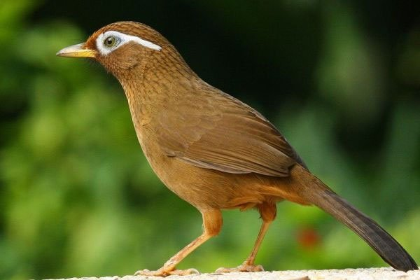
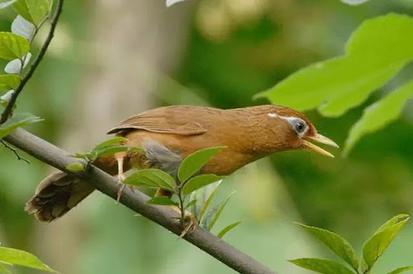

Chim Họa Mi: Đặc điểm, chọn chim giống, cách nuôi và chăm sóc chim hót hay
Chim Họa Mi là loài chim được yêu thích nhất trong thế giới những người đam mê chim cảnh. Với ngoại hình đẹp mắt, giọng hót véo von tuyệt vời khiến nhiều người yêu chim điêu đứng. Nhưng để chăm nuôi chúng phát triển toàn diện như thế không phải ai cũng biết. Nếu bạn đang và sẽ nuôi một chú chim họa mi cho riêng mình thì hãy theo dõi cách nuôi dưỡng chim Họa Mi qua bài viết dưới đây.
Đặc điểm của chim Họa Mi
Chim Họa Mi được nhiều người mệnh danh là loài chim có giọng hót tuyệt vời nhất trong tất cả các loài chim rừng. Cũng chính vì thế mà người nghệ sĩ nào có tông giọng tốt, hát hay đều được so sánh với chim họa mi.
Là giống chim rừng, Họa mi thường sống phổ biến trong các khu rừng ở Trung Quốc và Việt Nam. Tại nước ta, thì họa mi tập trung chủ yếu ở các tỉnh nhiều rừng phía Bắc như: Lai Châu, Lạng Sơn, Sơn La, Móng Cái,… Đặc điểm tự nhiên thích hợp nhất cho chim sống là rừng rậm cận nhiệt đới, vùng núi cao, nhiệt độ thấp, mát lạnh.
Chọn giống chim Họa Mi
Chim Họa Mi là một loài chim hoang dã. Muốn chúng hót lảnh lót, hấu đá như ở ngoài tự nhiên thì bước đầu là bước chọn giống chim có chất lượng tốt. Vì thế, chúng tôi sẽ gợi ý cho bạn một vài đặc điểm của họa mi tốt giống như sau.
Khi mua hoặc bẫy chim cần chú ý những đặc điểm:
– Đầu chim: Đầu chim có nhiều hình dạng đặc sắc khác nhau. Nhưng theo những người trong nghề truyền lại nên chọn chim có cái “đầu rắn”. Việc trước tiên nhìn nhận bạn hãy nhìn phần đầu chim. Nếu nhìn theo phương ngang thấy phần mỏ phía trên trán so với đỉnh đầu là một đường thẳng thì đúng chuẩn.
– Về bộ lông: Một con chim họa mi chất lượng là phải sở hữu bộ lông luôn mềm mượt, óng ả và tơi xốp. Phần lông đầu phải mỏng, ôm da sát vào da đầu. Lông cánh mượt, không xơ, không xù lên, vón cục.
– Mắt: Mắt Họa Mi không hề có giác mạc giống như cái lồng đèn nhiều màu vậy đó. Nên chọn con chim có đồng tử (phần chấm đen trong con ngươi) nhỏ hơn trong số những con khác. Đặc biệt hơn là đồng tử phải có những tia mắt lóe ra xung quanh càng to, càng rõ ràng và dày là tốt nhất.
– Chân chim: Cuối cùng là chân chim. Chân rắn chắc, khỏe mạnh. Chẳng chân phải to, viền của vảy chân chim có màu sẫm tối. Ngón chân không cần quá dài, móng vuốt nhọn sắc như móng vuốt của mèo. Đôi chân đẹp chính là thứ trụ vững cho toàn bộ cơ thể chim.
Trên đây là toàn bộ những thông tin về chim họa mi cũng như cách nuôi tốt nhất cho những chú chim của bạn. Mong rằng bạn sẽ có thêm kinh nghiệm trong việc chăm sóc chim họa mi lớn nhanh, căng lửa và hót hay nhất. Chúc bạn thành công!